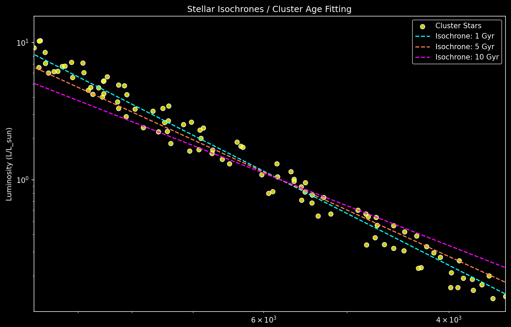

Purpose
Demonstrate how theoretical isochrones can be used to fit the age of a star cluster. Stars of different temperatures and luminosities are plotted along with isochrones for 1 Gyr, 5 Gyr, and 10 Gyr.
Background
Isochrones represent stars of the same age but different masses. By comparing the cluster's HR diagram with isochrones, astronomers estimate the cluster's age. The main-sequence turn-off temperature is key.
Methodology
- Generate synthetic star cluster (temperature & luminosity) using simple L ~ T⁴ relation.
- Generate simplified isochrones for multiple ages.
- Plot stars and isochrones on logarithmic H-R diagram.
- Compare cluster to isochrones to determine best-fit age.
Pseudocode
Generate N stars with temperatures and luminosities
For each isochrone age:
Calculate luminosity as a function of temperature (simplified)
Plot star cluster points
Overlay each isochrone with different color/linestyle
Add axis labels, title, legend
Show figure
Python Simulation Code
import numpy as np
import matplotlib.pyplot as plt
plt.style.use("dark_background")
np.random.seed(42)
n_stars = 100
# Temperature range (K)
temps = np.random.uniform(3500, 10000, n_stars)
# Luminosity using simple main-sequence relation: L ~ T^4
luminosities = (temps / 5778) ** 4 * np.random.uniform(0.7, 1.3, n_stars)
# Isochrones for 1 Gyr, 5 Gyr, 10 Gyr (arbitrary simplified power laws)
iso_ages = [1, 5, 10] # in Gyr
iso_colors = ['#00ffff', '#ff7f50', '#ff00ff']
iso_labels = ['1 Gyr', '5 Gyr', '10 Gyr']
iso_temps = np.linspace(3500, 10000, 200)
iso_lums = []
for age in iso_ages:
# Simplified model: older clusters have cooler main-sequence turn-off
lum = (iso_temps / 5778) ** (4 - 0.1*age) # decreasing slope with age
iso_lums.append(lum)
fig, ax = plt.subplots(figsize=(10, 7))
ax.scatter(temps, luminosities, color='yellow', s=40, edgecolors='w', alpha=0.8, label='Cluster Stars')
# Plot isochrones
for i, age in enumerate(iso_ages):
ax.plot(iso_temps, iso_lums[i], color=iso_colors[i], linestyle='--', label=f"Isochrone: {iso_labels[i]}")
ax.set_yscale('log')
ax.set_xscale('log')
ax.set_xlim(max(temps), min(temps)) # invert x-axis
ax.set_ylim(min(luminosities)*0.8, max(luminosities)*1.5)
ax.set_xlabel("Temperature (K)")
ax.set_ylabel("Luminosity (L/L_sun)")
ax.set_title("Stellar Isochrones / Cluster Age Fitting")
ax.legend()
plt.tight_layout()
plt.show()
Explanation
- Cluster stars are randomly distributed in temperature/luminosity.
- Isochrones are simplified approximations of real stellar evolution tracks.
- The main-sequence turn-off shifts to cooler temperatures for older ages.
- By overlaying isochrones on the cluster, we can estimate the cluster age visually.
Expected Output
Scatter plot of cluster stars in yellow with overlaid isochrones in cyan, coral, and magenta. Log-log axes with inverted x-axis to follow HR diagram convention.
